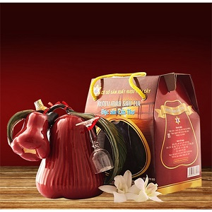

Thông tin về món ăn
Nguồn gốc
Rượu mận Sáu Tia bắt nguồn từ cù lao Tân Lộc, quận Thốt Nốt, Cần Thơ, được sáng tạo bởi ông Nguyễn Phú Tia (biệt danh Sáu Tia) vào năm 2006 sau hơn sáu năm nghiên cứu. Tên gọi "Sáu Tia" là lấy theo biệt danh của ông.
Nguyên liệu chính
- Nếp: Rượu nếp ngâm mận chín, thơm nồng, vị ngọt nhẹ.
- Mận An Phước: Chọn lọc kỹ lưỡng khi trái chín mọng để đảm bảo hương vị ngọt thanh và thơm tự nhiên.
- Mạch nha: Mạch nha được sử dụng để lên men cùng với thịt mận, tạo nên quy trình sản xuất độc đáo thay vì chỉ ngâm thông thường.
Đặc điểm
- Hương vị: Ngọt thanh, hơi chua nhẹ, uống êm dịu, thơm mùi mận tự nhiên.
- Cách thưởng thức: Uống trực tiếp, dùng làm cocktail hoặc chế biến món ăn.
- Trải nghiệm: Hương rượu mận nhẹ nhàng, êm dịu, tạo cảm giác miền Tây gần gũi và ấm áp, thích hợp làm quà tặng sang trọng hoặc thân mật.